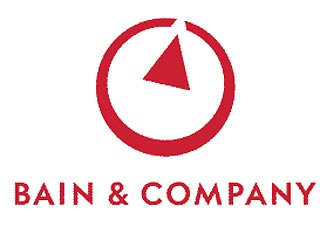

| The Kellogg School of Management (The Kellogg School or Kellogg) is the business school of Northwestern University in Evanston, Illinois, with additional campuses in downtown Chicago, Illinois and Miami, Florida. Kellogg offers full-time, part-time, and executive programs, and partners with schools in China, France/Singapore, India, Spain, Hong Kong, Israel, Germany, Canada, and Thailand. Degrees granted include the Master of Business Administration (MBA), Ph.D., an MBA-JD, and MMM Program, a MBA + MDI dual degree. Founded in 1908 in downtown Chicago as a part-time evening program, the school was chartered to educate business leaders with "good moral character." Kellogg pioneered the use of group projects and evaluations and popularized the importance of "teamwork" and "team leadership" within the business world. Kellogg has historically been ranked as one of the top business schools in the world by BusinessWeek, U.S. News & World Report, The Economist Intelligence Unit, and other business news outlets. The PTMBA program has recently been ranked #1 in the nation by Business Week. Alumni from the Kellogg school hold leadership positions in for-profit, nonprofit, governmental, and academic institutions around the world. |
|  | Bain & Company is an American global management consulting firm headquartered in Boston, Massachusetts. It is one of the Big Three management consulting firms. The firm provides advisory services to businesses, nonprofit organizations, and governments. Bain has 51 offices in 33 countries and more than 5,400 employees. Its has been described in Forbes Magazine as one of the most prestigious management consulting firms. In a Financial Times interview, Bain partner Bill Neuenfeldt identified the desired qualities in potential hires as "intelligence, integrity, passion and the ambition to make a difference." An entry-level Associate Consultant (AC) is typically a graduate from an upper-tier undergraduate institution. No specific major is required for the AC role, though an academic background related to data-based analysis (e.g., economics, business, sciences or engineering) can be a plus for the job. The Associate Consultant (AC) role typically lasts for 24 months, after which most ACs are promoted to the Senior Associate Consultant (SAC) role. An SAC may have the opportunity to spend six months in a Bain office of his or her choice, leave Bain for six months to work for another company or non-profit organization, or take a two-month sabbatical for purely personal pursuits. After 36 months at Bain, most SACs either leave Bain to attend graduate school (top-performing SACs may receive funding for graduate business studies) or join another company. Some SACs choose to stay on for a fourth year; high-performing SACs may be promoted directly to Consultant, the post-MBA position.[citation needed] Those individuals that choose to join Bain after completing their MBA or other professional/graduate training enter in the Consultant role. Increasing responsibility over planning and managing leads to a Case Team Leader (CTL) role. |